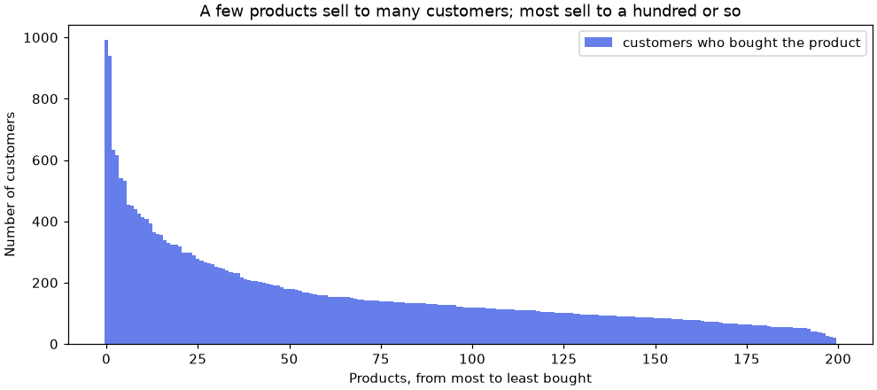
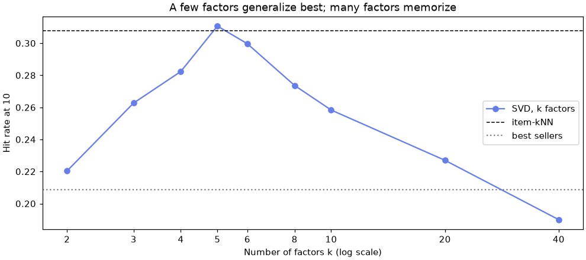

🛒 Lesson 11.2: Recommendation Systems
Turn 32,000 purchases into "picked for you" suggestions, and prove with an honest test that they beat simply showing everyone the best sellers.
🎯 Learning Objectives
By the end of this lesson, you will be able to:
- Build a sparse customer-by-product matrix from purchase records with SciPy
- Evaluate a recommender with a leave-last-out split and hit rate at 10, against random and best-seller baselines
- Implement item-based collaborative filtering with cosine similarity, and matrix factorization with
TruncatedSVD - Use product attributes for content-based recommendations, and explain how they rescue a brand-new product
- Judge a recommender on more than accuracy: catalog coverage and popularity bias
In This Lesson
🧭 The Clerk Who Remembers
Pinecrest Outfitters sends a monthly email with a row of products. Today every customer gets the same row: the best sellers. The marketing team wants a personal row instead, a "Picked for You" strip that shows each customer the five products they are most likely to buy next. That is a recommendation system, one of the most common pieces of machine learning in everyday life.
💡 Mental Model: The Clerk Who Remembers
Picture a long-serving clerk at the Bend store. She has watched thousands of customers shop. When a regular buys a climbing harness, she does not reach for the best-selling socks; she says, "People who buy that harness usually come back for a chalk bag." She has no rule book. She has noticed which products tend to end up with the same customers. That is collaborative filtering: recommendations learned from the behavior of many customers together.
A new clerk on day one cannot do that. The best she can do is point at the best sellers (a popularity recommender) or read the product labels: "you bought a paddle, here are other paddling items" (a content-based recommender). This lesson builds all three and measures which one helps customers most.
Recommendation looks different from the classification and regression you have done so far. There is no single target column. Instead there is a large, mostly empty grid of customers by products, and the job is to rank the empty cells: of the products a customer has not bought, which are they most likely to buy next? The tools, though, are ones you already know: cosine similarity from k-nearest neighbors, a matrix decomposition that is a close cousin of PCA, and the discipline of holding out data you never train on.
🤔 Why This Matters
A recommender is easy to build and easy to fool yourself with. Almost any method produces lists that look sensible. The skill this lesson teaches is the evaluation: hide something real, ask the model to find it, and compare with a baseline that knows nothing about the customer. Without that, "personalized" is just a word on a slide.
📂 Purchases as a Matrix
Two files hold the data. interactions.csv has one row per customer and product the customer bought, and products_ml.csv describes the 200 products.
import numpy as np
import pandas as pd
interactions = pd.read_csv("data/interactions.csv")
products = pd.read_csv("data/products_ml.csv")
print(interactions.shape, products.shape)
print(interactions.head())
print(products[["product_id", "name", "primary_activity"]].head(3))Output
(32178, 5) (200, 8)
customer_id product_id purchases rating last_purchase_date
0 C100001 APL-3021 2 5.0 2024-03-20
1 C100001 KIT-3003 2 5.0 2024-08-27
2 C100001 KIT-3013 1 NaN 2024-09-23
3 C100001 APL-3019 3 4.0 2024-10-17
4 C100001 TNT-3016 2 NaN 2024-11-22
product_id name primary_activity
0 FTW-3001 Larkspur Ridge Timberline Hiking Boots hiking
1 FTW-3002 Larkspur Ridge Basecamp Trail Runners running
2 FTW-3003 Larkspur Ridge Meadow Approach Shoes climbingEach interaction row says that a customer bought a product (purchases times, most recently on last_purchase_date), sometimes with a star rating. Data about what people did is called implicit feedback; star ratings, where people tell you what they think, are explicit feedback. Here most rows have no rating, which is typical: people buy far more often than they review. This lesson works with the purchases.
n_customers = interactions["customer_id"].nunique()
n_products = interactions["product_id"].nunique()
density = len(interactions) / (n_customers * n_products)
print(f"{n_customers:,} customers x {n_products} products: {density:.1%} of the cells are filled")
print(f"rows with a star rating: {interactions['rating'].notna().mean():.1%}")
print(interactions.groupby("customer_id").size().describe().round(1))Output
3,000 customers x 200 products: 5.4% of the cells are filled
rows with a star rating: 37.9%
count 3000.0
mean 10.7
std 6.8
min 3.0
25% 6.0
50% 9.0
75% 13.0
max 45.0
dtype: float64A typical customer has bought 9 of the 200 products, so about 95% of the grid is empty. The empty cells are not "dislikes": a customer who never bought a tent here may love tents and simply bought one elsewhere. That uncertainty is why recommenders rank the empty cells instead of predicting a firm yes or no for each one.
📈 The Long Tail
Before modeling, look at how purchases spread over products. In almost every shop a few products sell to a large share of customers and most sell to a few.
import matplotlib.pyplot as plt
buyers = interactions.groupby("product_id").size().sort_values(ascending=False)
names = products.set_index("product_id")["name"]
print(pd.DataFrame({"name": names[buyers.index[:3]], "buyers": buyers.head(3)}))
print(f"fewest buyers: {buyers.min()}, median: {buyers.median():.0f}")
print(f"top 20 products (10% of the catalog) = {buyers.head(20).sum() / buyers.sum():.1%} of all purchases")
fig, ax = plt.subplots(figsize=(9, 4), layout="constrained")
ax.bar(range(len(buyers)), buyers.to_numpy(), width=1.0, color="#667eea", label="customers who bought the product")
ax.set_xlabel("Products, from most to least bought")
ax.set_ylabel("Number of customers")
ax.set_title("A few products sell to many customers; most sell to a hundred or so")
ax.legend()
plt.show()Output
name buyers
product_id
ACC-3014 Larkspur Ridge Lookout Sunscreen SPF 50 992
ACC-3009 Juniper Vane Tempo Sunscreen SPF 50 941
ACC-3018 Cedar Notch Tundra First-Aid Kit 633
fewest buyers: 19, median: 120
top 20 products (10% of the catalog) = 29.9% of all purchases
Keep this shape in mind. A best-seller list shows the left end of this chart to everyone. A good personal recommender should reach further into the tail, because that is where a customer's particular interests live.
✂️ An Honest Test: Leave the Last One Out
How do you test a recommender without sending any emails? Use the past. For each customer, hide their most recent purchase, train on everything else, and ask the model for a top-10 list. If the hidden product is in the list, that customer counts as a hit. The share of customers with a hit is the hit rate at 10, written HR@10.
Hiding the latest purchase rather than a random one matters. It mimics the real job (predict what comes next from what came before), and it keeps the future out of the training data: the same rule as splitting by time in Lesson 1.2. Purchases on the same date are ordered by product ID, so the split is repeatable.
interactions = interactions.sort_values(["customer_id", "last_purchase_date", "product_id"])
test = interactions.groupby("customer_id").tail(1)
train = interactions.drop(test.index)
print(f"{len(train):,} training rows, {len(test):,} test rows (one per customer)")
print(test[["customer_id", "product_id", "last_purchase_date"]].head(3))Output
29,178 training rows, 3,000 test rows (one per customer)
customer_id product_id last_purchase_date
11 C100001 ACC-3019 2025-11-15
31 C100002 APL-3021 2025-12-16
43 C100004 ACC-3020 2025-12-31🧮 The Customer-by-Product Matrix
Most of the grid is empty, so store it as a sparse matrix: SciPy keeps only the filled cells and their positions. Each customer gets a row number and each product a column number, and the matrix is built from the training rows only.
from scipy.sparse import csr_matrix
customer_ids = np.sort(interactions["customer_id"].unique())
product_ids = products["product_id"].to_numpy()
row_of = pd.Series(np.arange(len(customer_ids)), index=customer_ids)
col_of = pd.Series(np.arange(len(product_ids)), index=product_ids)
R = csr_matrix(
(np.ones(len(train)), (row_of[train["customer_id"]].to_numpy(), col_of[train["product_id"]].to_numpy())),
shape=(len(customer_ids), len(product_ids)),
)
print(R.shape, f"{R.nnz:,} stored ones")
print(f"dense would need {R.shape[0] * R.shape[1] * 8 / 1e6:.1f} MB, "
f"sparse needs {(R.data.nbytes + R.indices.nbytes + R.indptr.nbytes) / 1e6:.2f} MB")Output
(3000, 200) 29,178 stored ones
dense would need 4.8 MB, sparse needs 0.36 MBEach cell is 1 if the customer bought the product (in training) and empty otherwise. We store 1 rather than the purchase count; Exercise 2 tests whether the counts add anything. At 200 products the memory saving is small, but a shop with a million customers and 50,000 products could never hold the dense version.
🎯 The Scoring Helpers
Every recommender below produces a score matrix with the same shape as R: one number per customer and product, higher meaning "recommend sooner". Two helpers turn any score matrix into top-k lists and a hit rate. Products a customer already bought are set to minus infinity first, so they can never be recommended (Mistake 2 shows what happens if you forget).
owned = R.toarray() > 0
test_col = col_of[test.set_index("customer_id").loc[customer_ids, "product_id"]].to_numpy()
def top_k(scores, k=10):
scores = np.array(scores, dtype=float) # a copy, so the caller's matrix is untouched
scores[owned] = -np.inf # never recommend what they already have
return np.argsort(-scores, axis=1)[:, :k] # column numbers of the k highest scores
def hit_rate(scores, k=10):
return (top_k(scores, k) == test_col[:, None]).any(axis=1).mean()
print(owned.shape, test_col[:5])Output
(3000, 200) [196 46 197 98 107]test_col holds, for each customer in row order, the column number of their hidden product. top_k(...) == test_col[:, None] compares each customer's ten recommendations with their own hidden column, and .any(axis=1) asks "was it anywhere in the ten?" The mean of those yes-or-no answers is the hit rate.
🎯 Baselines: Random and Best Sellers
First, the floor. A random list of 10 from the roughly 190 products a customer has not bought should hit about 10 / 190, roughly 5% of the time. Then the real baseline: recommend the training set's best sellers that the customer does not own yet.
rng = np.random.default_rng(42)
random_scores = rng.random(R.shape)
popularity = np.asarray(R.sum(axis=0)).ravel() # buyers per product, training rows only
popularity_scores = np.tile(popularity, (R.shape[0], 1))
print(f"random HR@10 = {hit_rate(random_scores):.3f}")
print(f"popularity HR@10 = {hit_rate(popularity_scores):.3f}")Output
random HR@10 = 0.047
popularity HR@10 = 0.209The best-seller list hits for about one customer in five, four times better than random. That is a strong baseline, and it is what many shops actually use. A personal recommender has to beat 0.209 to earn its extra complexity. The random generator is seeded (default_rng(42)) for the same reason as every random_state=42 in this course: so your numbers match the page.
✅ Same Habit, New Problem
In Lesson 1.1 the baseline was a DummyClassifier. Here it is the best-seller list. The habit is identical: before believing a clever model, measure what knowing nothing about the individual already achieves.
🤝 Item-Based Collaborative Filtering
Now teach the computer the clerk's trick. Describe each product by its column of R: the list of customers who bought it. Two products are similar if mostly the same customers bought them. The measure is cosine similarity, which you met with k-nearest neighbors. For two 0/1 columns a and b it is
cos(a, b) = shared buyers / √(buyers of a × buyers of b)
It is 0 when no customer bought both and 1 when exactly the same customers bought both. Dividing by the sizes stops best sellers from looking similar to everything just because they are everywhere.
from sklearn.metrics.pairwise import cosine_similarity
item_sim = cosine_similarity(R.T) # R.T is products x customers, so this is products x products
np.fill_diagonal(item_sim, 0) # a product is not its own neighbor
print(item_sim.shape)
harness = col_of["CLM-3001"]
print("Neighbors of:", names.iloc[harness])
nearest = np.argsort(-item_sim[harness])[:5]
print(products.iloc[nearest][["name", "primary_activity"]].assign(similarity=item_sim[harness, nearest].round(3)))Output
(200, 200)
Neighbors of: Juniper Vane Headwater Climbing Harness
name primary_activity similarity
121 Juniper Vane Summit Climbing Harness climbing 0.282
113 Pinecrest Timberline Locking Carabiner climbing 0.268
125 Cedar Notch Wayfinder Chalk Bag climbing 0.267
124 Pinecrest Tempo 60m Rope climbing 0.254
109 Pinecrest Backcountry 60m Rope climbing 0.247Nobody told the computer that harnesses, carabiners, chalk bags and ropes belong together. It worked that out from who bought what. The similarities are modest (about 0.25: only some harness buyers also bought a rope), which is normal for shopping data and plenty for ranking.
To score a product for a customer, add up its similarity to everything the customer already owns. In matrix form that is a single multiplication, R @ item_sim: row u of the result is the sum of the similarity rows of the products customer u bought.
knn_scores = R @ item_sim
print(type(knn_scores).__name__, knn_scores.shape)
print(f"item-kNN HR@10 = {hit_rate(knn_scores):.3f}")Output
ndarray (3000, 200)
item-kNN HR@10 = 0.3080.308 against the best sellers' 0.209: the personal list finds the customer's next purchase about 50% more often. That is the core result of this lesson, and it took two lines of linear algebra. A sparse matrix times a dense array gives a plain NumPy array, which is why the result prints as ndarray.
👀 One Customer's List
Numbers convince; a single example builds intuition. Here is what the model saw for one customer, what it suggested, and what the customer really bought next.
def show_customer(customer, scores, n=5):
r = row_of[customer]
print("Bought before:")
for name in names.iloc[np.flatnonzero(owned[r])]:
print(" ", name)
print("Recommended:")
for name in names.iloc[top_k(scores, n)[r]]:
print(" ", name)
print("Really bought next:", names.iloc[test_col[r]])
show_customer("C100027", knn_scores)Output
Bought before:
Wrenfield Trailhead Approach Shoes
Pinecrest Wayfinder Approach Shoes
Tallgrass Talus Chalk Bag
Recommended:
Juniper Vane Summit Climbing Harness
Juniper Vane Tundra Climbing Pants
Wrenfield Meadow Climbing Pants
Pinecrest Bouldery Locking Carabiner
Cedar Notch Cairn Climbing Harness
Really bought next: Cedar Notch Cairn Climbing HarnessThree climbing purchases in, the model offers more climbing gear, and the second harness on its list is the one the customer bought. (top_k ranks all 3,000 customers and we keep one row; at this size that takes a blink.)
💡 Item-Based or User-Based?
You could flip the idea: find customers similar to this one and recommend what they bought (user-based collaborative filtering). Item-based is usually preferred in shops: there are far fewer products than customers, product similarities change slowly so they can be computed once a night, and "because you bought X" is an explanation customers understand.
🧩 Matrix Factorization with SVD
Item-kNN compares products one pair at a time. Matrix factorization looks for a few hidden themes that explain the whole grid at once. The idea: maybe customers do not have 200 independent preferences, but a handful of tastes (say, "into climbing", "into paddling"), and each product appeals to those tastes in different amounts. Then the big matrix can be approximated by two thin ones:
R (3000 × 200) ≈ customer factors (3000 × k) @ product factors (k × 200)
The score for a customer and product is the dot product of the customer's k taste numbers with the product's k numbers: high when the customer's tastes match what the product appeals to. TruncatedSVD finds the best such approximation for a chosen k. It is the same mathematics as PCA from Lesson 9.1, without centering the data first, which is what lets it work directly on a sparse matrix.
from sklearn.decomposition import TruncatedSVD
svd = TruncatedSVD(n_components=5, random_state=42)
customer_factors = svd.fit_transform(R) # 3000 x 5
product_factors = svd.components_ # 5 x 200
svd_scores = customer_factors @ product_factors
print(customer_factors.shape, product_factors.shape)
print(f"share of variance captured: {svd.explained_variance_ratio_.sum():.1%}")
print(f"SVD k=5 HR@10 = {hit_rate(svd_scores):.3f}")Output
(3000, 5) (5, 200)
share of variance captured: 17.1%
SVD k=5 HR@10 = 0.311Five numbers per customer and five per product match item-kNN's hit rate. The approximation captures only 17% of the variance of the 0/1 grid, and that is fine: the goal is not to reproduce every purchase (much of it is noise) but to capture the patterns that predict the next one.
🔍 What Did the Factors Learn?
The factors have no names; the algorithm only found directions. You can label them by looking at the products that score highest on each one. The primary_activity column was never shown to the model, so it is a fair check.
activity = products["primary_activity"]
for f in range(5):
top_products = np.argsort(-product_factors[f])[:10]
print(f"factor {f}:", activity.iloc[top_products].value_counts().to_dict())Output
factor 0: {'general': 8, 'hiking': 2}
factor 1: {'paddling': 4, 'general': 3, 'running': 3}
factor 2: {'hiking': 7, 'general': 3}
factor 3: {'climbing': 10}
factor 4: {'running': 8, 'general': 1, 'camping': 1}Factor 0 is mostly "general" products such as sunscreen and first-aid kits: it is essentially popularity, the things almost everyone buys. Factors 2, 3 and 4 line up cleanly with hiking, climbing and running. Factor 1 is a mixture of paddling, general and running products: SVD factors must be at right angles to each other, so not every one comes out as a single clean theme. Still, the model rediscovered customer tastes from purchases alone. That is also a caution: a factor is a pattern in the data, and naming it is your interpretation, to be checked as we just did.
🎚️ How Many Factors?
More factors fit the training grid more closely. Do they recommend better?
ks = [2, 3, 4, 5, 6, 8, 10, 20, 40]
svd_hr = []
for k in ks:
model = TruncatedSVD(n_components=k, random_state=42)
factors = model.fit_transform(R)
svd_hr.append(hit_rate(factors @ model.components_))
print({k: round(float(hr), 3) for k, hr in zip(ks, svd_hr)})
fig, ax = plt.subplots(figsize=(9, 4), layout="constrained")
ax.plot(ks, svd_hr, marker="o", color="#667eea", label="SVD, k factors")
ax.axhline(hit_rate(knn_scores), color="black", linestyle="--", linewidth=1, label="item-kNN")
ax.axhline(hit_rate(popularity_scores), color="gray", linestyle=":", linewidth=1.5, label="best sellers")
ax.set_xscale("log")
ax.set_xticks(ks, [str(k) for k in ks])
ax.minorticks_off()
ax.set_xlabel("Number of factors k (log scale)")
ax.set_ylabel("Hit rate at 10")
ax.set_title("A few factors generalize best; many factors memorize")
ax.legend()
plt.show()Output
{2: 0.22, 3: 0.263, 4: 0.282, 5: 0.311, 6: 0.3, 8: 0.274, 10: 0.258, 20: 0.227, 40: 0.19}
This is the bias-variance trade-off from Lesson 3.2 in a new costume. Too few factors cannot represent the different tastes (underfitting); too many start to reproduce each customer's exact past basket, which says little about the next purchase (overfitting). Here the best k is 5. This sweep reads the test purchases to show the shape of the curve; in a real project you would choose k on a separate validation purchase, which is exactly what this lesson's project does.
⚠️ We Just Peeked
Choosing k by its test hit rate uses the test set for tuning, the same mistake as tuning a classifier on the test set. The chart is fine for learning what k does. For a number you would report, choose k on a separate validation item and score the test item once at the end. The project does exactly that.
🏷️ Content-Based Recommendations and Cold Start
Collaborative methods need purchase history. A product launched yesterday has none: its column in R is all zeros, so its cosine similarity to every other product is 0 and SVD gives it no factors. It will never be recommended. This is the cold-start problem, and it also hits brand-new customers.
Content-based recommenders avoid it by describing products by their attributes instead of their buyers. Here each product gets a one-hot vector of its primary_activity and category, and similarity is cosine similarity between those vectors. The scoring step is unchanged.
from sklearn.preprocessing import OneHotEncoder
encoder = OneHotEncoder(sparse_output=False)
attributes = encoder.fit_transform(products[["primary_activity", "category"]])
content_sim = cosine_similarity(attributes)
np.fill_diagonal(content_sim, 0)
content_scores = R @ content_sim
print(attributes.shape)
print(f"content HR@10 = {hit_rate(content_scores):.3f}")Output
(200, 16)
content HR@10 = 0.1920.192: below the best-seller list. Two coarse labels cannot tell a best-selling chalk bag from a rarely bought one, and they cannot see that hikers also buy sunscreen. Collaborative signals are much richer, when they exist. Now pretend a paddling product has just launched and has no buyers yet:
new_product = col_of["PDL-3018"]
print("New product:", names.iloc[new_product])
print("buyers in training:", int(R[:, new_product].sum()))
cold = R.copy().tolil()
cold[:, new_product] = 0 # wipe its history: a brand-new product
cold_sim = cosine_similarity(cold.tocsr().T)
print("largest item-kNN similarity:", cold_sim[new_product].max())
closest = np.argsort(-content_sim[new_product])[:3]
print("content neighbors:", names.iloc[closest].tolist())Output
New product: Juniper Vane Alpenglow Spray Skirt
buyers in training: 23
largest item-kNN similarity: 0.0
content neighbors: ['Pinecrest Timberline Kayak Paddle', 'Larkspur Ridge Foothill Deck Bag', 'Juniper Vane Summit Paddle Leash']With its history wiped, the product's collaborative similarity to everything is exactly 0, so item-kNN could never put it on a list. Its content neighbors are other paddling products, so a content-based score can show it to customers who already paddle from day one. That is why real systems are hybrids: collaborative filtering for products with history, content features (or plain popularity) to bridge the cold start. Exercise 3 builds that bridge.
⚖️ Beyond Hit Rate: Coverage and Responsibility
Hit rate measures one thing: does the list contain the product the customer bought next. Two lists with the same hit rate can be very different for the shop and for customers. A simple second number is catalog coverage: how many different products appear on anyone's list at all. Another is how much of the list space goes to the 20 best sellers.
best_sellers = np.argsort(-popularity)[:20]
methods = {"best sellers": popularity_scores, "item-kNN": knn_scores,
"SVD k=5": svd_scores, "content": content_scores}
for name, scores in methods.items():
lists = top_k(scores)
print(f"{name:12s} HR@10 {hit_rate(scores):.3f} products shown: {len(np.unique(lists)):3d} of 200 "
f"slots used by top-20 sellers: {np.isin(lists, best_sellers).mean():.0%}")Output
best sellers HR@10 0.209 products shown: 31 of 200 slots used by top-20 sellers: 100%
item-kNN HR@10 0.308 products shown: 161 of 200 slots used by top-20 sellers: 51%
SVD k=5 HR@10 0.311 products shown: 153 of 200 slots used by top-20 sellers: 51%
content HR@10 0.192 products shown: 200 of 200 slots used by top-20 sellers: 20%The best-seller list only ever shows 31 products, and every one of its slots goes to the top 20. Item-kNN and SVD reach about 80% of the catalog while hitting more often. The content recommender shows every product but hits less. Nothing here is free: you are choosing a balance between accuracy, variety and fairness to products in the tail.
⚠️ Recommenders Shape What They Measure
A recommender is trained on purchases, and its recommendations then cause purchases. Popular products get shown more, sell more, and look even more popular next month: a feedback loop that can bury new and niche products and narrow what customers see. Purchase histories are also personal data: a list can reveal things (health, finances, family) that a customer would not want shown on a shared screen or in an email preview. Monitor coverage over time, keep some room for new products, and treat purchase data with the care you would want for your own.
⚠️ Common Mistakes
Recommender bugs are sneaky: three of these four produce a list and a number without any error at all.
1. Similarity on the Wrong Axis
wrong_sim = cosine_similarity(R) # customers x customers: 3000 x 3000
R @ wrong_simError
ValueError: matmul: dimension mismatch with signature (n,k=200),(k=3000,m)->(n,m)What it means: cosine_similarity compares rows. Given R, it compares customers, which produces a 3000 × 3000 matrix that cannot be multiplied with the 3000 × 200 R in that order. Fix: for product-to-product similarity pass R.T, so products are the rows. Always print the shape of a similarity matrix: it should be (products, products) for item-based filtering.
2. Recommending What They Already Own
unmasked = np.argsort(-np.asarray(knn_scores), axis=1)[:, :10]
print(f"slots filled with products the customer already owns: {np.take_along_axis(owned, unmasked, axis=1).mean():.0%}")
print(f"HR@10 without the mask: {(unmasked == test_col[:, None]).any(axis=1).mean():.3f}")Output (no error, and that is the problem)
slots filled with products the customer already owns: 14%
HR@10 without the mask: 0.270What happened: a product is very similar to the other things its owner bought, so owned products score high and crowd the list. Customers see items they already have, and the hit rate drops. Fix: mask owned items with -np.inf before ranking, as top_k does. (Some products, like socks or fuel, are bought again and again; for those a separate "buy it again" list makes more sense than mixing them in.)
3. Sorting the Wrong Way
scores = np.array(knn_scores)
scores[owned] = -np.inf
backwards = np.argsort(scores, axis=1)[:, :10] # ascending: the LOWEST scores first
print(f"HR@10: {(backwards == test_col[:, None]).any(axis=1).mean():.3f}")Output (no error, and that is the problem)
HR@10: 0.001What happened: np.argsort sorts from smallest to largest, so [:, :10] picks the ten least recommended products. Worse, the masked owned items (minus infinity) come first of all. A hit rate far below random (0.05) is the giveaway. Fix: sort the negated scores, np.argsort(-scores, axis=1), or reverse with [:, ::-1]. Always compare with the random baseline: a model that loses to random is usually a bug, not a bad model.
4. A Product the Model Has Never Seen
col_of["CLM-3999"] # a climbing product launched after the model was builtError
KeyError: 'CLM-3999'What it means: the model's product index was frozen when it was trained, and new products are not in it. In production this appears as a crash the first time someone asks about a new product. Fix: check membership first ("CLM-3999" in col_of.index) and route unknown products to a content-based or popularity fallback, then add them to the index when the model is retrained.
🛠️ Project: Picked for You
Build the recommender behind Pinecrest's "Picked for You" email, the way you would for real: choose the model on a validation item, score it once on the test item, then retrain on all the data and write five suggestions per customer to a file for the marketing team. Work in a new notebook called lesson_11_2_project, or a script called picked_for_you.py. Allow about 50 minutes.
🛠️ Step 1: Three-way split by time (10 min)
Each customer's last purchase is the test item and the one before it is the validation item. Everything earlier is for fitting. Every customer has at least three purchases, so everyone keeps at least one for fitting.
import numpy as np
import pandas as pd
from scipy.sparse import csr_matrix
from sklearn.decomposition import TruncatedSVD
from sklearn.metrics.pairwise import cosine_similarity
interactions = pd.read_csv("data/interactions.csv").sort_values(["customer_id", "last_purchase_date", "product_id"])
products = pd.read_csv("data/products_ml.csv")
test = interactions.groupby("customer_id").tail(1)
rest = interactions.drop(test.index)
valid = rest.groupby("customer_id").tail(1)
fit_rows = rest.drop(valid.index)
print(f"fit {len(fit_rows):,} validation {len(valid):,} test {len(test):,}")Output
fit 26,178 validation 3,000 test 3,000🛠️ Step 2: Reusable helpers (10 min)
Write the matrix builder and the evaluation as functions of their inputs, so the same code serves validation, test and production.
customer_ids = np.sort(interactions["customer_id"].unique())
product_ids = products["product_id"].to_numpy()
row_of = pd.Series(np.arange(len(customer_ids)), index=customer_ids)
col_of = pd.Series(np.arange(len(product_ids)), index=product_ids)
def build_matrix(rows):
return csr_matrix(
(np.ones(len(rows)), (row_of[rows["customer_id"]].to_numpy(), col_of[rows["product_id"]].to_numpy())),
shape=(len(customer_ids), len(product_ids)),
)
def recommend(scores, owned_matrix, k):
scores = np.array(scores, dtype=float)
scores[owned_matrix.toarray() > 0] = -np.inf
return np.argsort(-scores, axis=1)[:, :k]
def hit_rate_on(scores, owned_matrix, target_rows, k=10):
target = col_of[target_rows.set_index("customer_id").loc[customer_ids, "product_id"]].to_numpy()
return (recommend(scores, owned_matrix, k) == target[:, None]).any(axis=1).mean()
def popularity_model(R):
return np.tile(np.asarray(R.sum(axis=0)).ravel(), (R.shape[0], 1))
def item_knn_model(R):
sim = cosine_similarity(R.T)
np.fill_diagonal(sim, 0)
return R @ sim
def svd_model(R, k):
svd = TruncatedSVD(n_components=k, random_state=42)
return svd.fit_transform(R) @ svd.components_
R_fit = build_matrix(fit_rows)
print(R_fit.shape, R_fit.nnz)Output
(3000, 200) 26178🛠️ Step 3: Choose on the validation item (10 min)
Fit every candidate on R_fit and score it on the validation item. The test item is not touched.
val_results = {"best sellers": hit_rate_on(popularity_model(R_fit), R_fit, valid),
"item-kNN": hit_rate_on(item_knn_model(R_fit), R_fit, valid)}
for k in [3, 4, 5, 6, 8]:
val_results[f"SVD k={k}"] = hit_rate_on(svd_model(R_fit, k), R_fit, valid)
for name, hr in val_results.items():
print(f"{name:13s} validation HR@10 = {hr:.3f}")
best_name = max(val_results, key=val_results.get)
print("chosen:", best_name)Output
best sellers validation HR@10 = 0.209
item-kNN validation HR@10 = 0.286
SVD k=3 validation HR@10 = 0.244
SVD k=4 validation HR@10 = 0.261
SVD k=5 validation HR@10 = 0.285
SVD k=6 validation HR@10 = 0.277
SVD k=8 validation HR@10 = 0.258
chosen: item-kNNValidation hit rates are a little lower than the test rates in the lesson, because each customer has one fewer purchase to learn from. What matters is the ranking: item-kNN and SVD with 5 factors are essentially tied (0.286 against 0.285), both far ahead of the best sellers. The rule picks the maximum, item-kNN. With a tie this close, either is a defensible choice; item-kNN has the bonus that every suggestion can be explained as "because you bought X". The step-4 code handles either outcome.
🛠️ Step 4: Score once on the test item (5 min)
Refit the chosen model and the baseline on everything except the test item (fit rows plus validation rows), then measure each once.
R_train = build_matrix(rest)
chosen_k = int(best_name.split("=")[1]) if best_name.startswith("SVD") else None
test_pop = hit_rate_on(popularity_model(R_train), R_train, test)
test_chosen = hit_rate_on(svd_model(R_train, chosen_k) if chosen_k else item_knn_model(R_train), R_train, test)
print(f"best sellers test HR@10 = {test_pop:.3f}")
print(f"{best_name:13s} test HR@10 = {test_chosen:.3f} ({test_chosen / test_pop - 1:+.0%} vs best sellers)")Output
best sellers test HR@10 = 0.209
item-kNN test HR@10 = 0.308 (+47% vs best sellers)This is the number to report: chosen without looking at the test item, measured on it exactly once. It matches the lesson's item-kNN result because the training rows are the same.
🛠️ Step 5: Retrain on everything and write the lists (10 min)
For the real email, the most recent purchases are the most valuable information, so refit on all interactions. Keep five products per customer and save them with names, ready for the email template.
R_all = build_matrix(interactions)
final_scores = svd_model(R_all, chosen_k) if chosen_k else item_knn_model(R_all)
picks = recommend(final_scores, R_all, k=5)
picked = pd.DataFrame({
"customer_id": np.repeat(customer_ids, 5),
"rank": np.tile(np.arange(1, 6), len(customer_ids)),
"product_id": product_ids[picks.ravel()],
})
picked = picked.merge(products[["product_id", "name", "primary_activity"]], on="product_id", how="left")
picked.to_csv("picked_for_you.csv", index=False)
print(picked.shape)
print(picked.head(5).to_string(index=False))Output
(15000, 5)
customer_id rank product_id name primary_activity
C100001 1 ACC-3018 Cedar Notch Tundra First-Aid Kit general
C100001 2 ACC-3014 Larkspur Ridge Lookout Sunscreen SPF 50 general
C100001 3 ACC-3003 Granite Fork Lookout First-Aid Kit general
C100001 4 ACC-3009 Juniper Vane Tempo Sunscreen SPF 50 general
C100001 5 ACC-3006 Cedar Notch Riffle Headlamp camping🛠️ Step 6: Sanity checks and summary (5 min)
Before handing the file over, check that nobody is offered something they own and that the lists are not just the best sellers again.
owned_pairs = set(zip(interactions["customer_id"], interactions["product_id"]))
already_owned = sum((c, p) in owned_pairs for c, p in zip(picked["customer_id"], picked["product_id"]))
top20 = set(product_ids[np.argsort(-np.asarray(R_all.sum(axis=0)).ravel())[:20]])
print(f"""Picked for You
Model : {best_name} (chosen on validation)
Test HR@10 : {test_chosen:.3f} vs best sellers {test_pop:.3f}
Customers : {picked['customer_id'].nunique():,}, 5 products each
Already owned : {already_owned}
Different products : {picked['product_id'].nunique()} of {len(product_ids)}
Slots from top-20 : {picked['product_id'].isin(top20).mean():.0%}
Saved : picked_for_you.csv""")Output
Picked for You
Model : item-kNN (chosen on validation)
Test HR@10 : 0.308 vs best sellers 0.209
Customers : 3,000, 5 products each
Already owned : 0
Different products : 112 of 200
Slots from top-20 : 63%
Saved : picked_for_you.csv✅ Project Completion Checklist
- Your split has 26,178 fit rows and 3,000 validation and 3,000 test rows, all split by date per customer
- The candidates were compared on the validation item, and the test item was used once, at the end
- The chosen model beats the best-seller baseline on the test item, and you can say by how much
- The final model was refit on all interactions before writing the lists
picked_for_you.csvhas 15,000 rows (5 per customer), with names, and no product a customer already owns- You checked coverage: how many different products appear and how many slots go to the best sellers
🏋️ Hands-on Exercises
These continue from the lesson's variables (R, owned, test_col, top_k, hit_rate and the score matrices), not the project's. If you are in the project notebook, rerun the lesson's code blocks first.
🏋️ Exercise 1: Longer and Shorter Lists
The email shows 5 products, the website 20. Print the hit rate at 5, 10 and 20 for the best sellers, item-kNN and SVD. Does the advantage of the personal recommenders hold at every length?
💡 Hint
hit_rate already takes a k argument.
✅ Solution
for k in [5, 10, 20]:
print(f"k={k:2d} best sellers {hit_rate(popularity_scores, k):.3f} "
f"item-kNN {hit_rate(knn_scores, k):.3f} SVD {hit_rate(svd_scores, k):.3f}")Output
k= 5 best sellers 0.137 item-kNN 0.189 SVD 0.189
k=10 best sellers 0.209 item-kNN 0.308 SVD 0.311
k=20 best sellers 0.335 item-kNN 0.487 SVD 0.485All hit rates grow with longer lists, and the personal recommenders stay ahead at every length: by about 40% at 5 and by 45% to 50% at 10 and 20. With a 20-product list, almost half of all customers would see the product they bought next.
🏋️ Exercise 2: Do Purchase Counts Help?
The matrix stores 1 for "bought". Build a second training matrix that stores np.log1p(purchases) instead (so a product bought three times weighs more than one bought once), run item-kNN on it, and compare the hit rate with the 0/1 version.
💡 Hint
Copy the csr_matrix call and replace np.ones(len(train)) with the weights from train["purchases"]. The owned mask does not change.
✅ Solution
R_weighted = csr_matrix(
(np.log1p(train["purchases"].to_numpy()),
(row_of[train["customer_id"]].to_numpy(), col_of[train["product_id"]].to_numpy())),
shape=R.shape,
)
weighted_sim = cosine_similarity(R_weighted.T)
np.fill_diagonal(weighted_sim, 0)
print(f"0/1 item-kNN HR@10 = {hit_rate(knn_scores):.3f}")
print(f"weighted item-kNN HR@10 = {hit_rate(R_weighted @ weighted_sim):.3f}")Output
0/1 item-kNN HR@10 = 0.308
weighted item-kNN HR@10 = 0.302Slightly worse. Repeat purchases here mostly reflect consumable items, not stronger taste, so weighting by them adds noise to the similarity. More information is not automatically better information: test it, as you just did.
🏋️ Exercise 3: Bridge the Cold Start
Pinecrest is launching a new paddling product (use the wiped PDL-3018 from the content section). Find the 200 customers whose content-based score for it is highest, and check what share of them have bought a paddling product before. Compare with the share of all customers.
💡 Hint
Column new_product of content_scores gives every customer's score for it. For "has bought paddling", combine owned with products["primary_activity"] == "paddling".
✅ Solution
is_paddling = (products["primary_activity"] == "paddling").to_numpy()
paddler = owned[:, is_paddling].any(axis=1)
audience = np.argsort(-content_scores[:, new_product])[:200]
print(f"paddlers among the 200 chosen: {paddler[audience].mean():.0%}")
print(f"paddlers among all customers : {paddler.mean():.0%}")Output
paddlers among the 200 chosen: 100%
paddlers among all customers : 43%Every one of the 200 has paddled before, against 43% of all customers. Content features give a brand-new product a sensible audience on launch day; once it has a few weeks of purchases, collaborative filtering can take over.
🏋️ Exercise 4: Who Benefits? (Stretch)
Split customers by how many products they have in training: 2 to 5, 6 to 10, and 11 or more. Compute the hit rate of the best sellers, item-kNN and SVD within each group. Which customers gain most from personalization, and why?
💡 Hint
Compute the per-customer hits, (top_k(scores) == test_col[:, None]).any(axis=1), then average within a boolean mask built from owned.sum(axis=1).
✅ Solution
history = owned.sum(axis=1)
groups = {"2-5": (history >= 2) & (history <= 5), "6-10": (history >= 6) & (history <= 10), "11+": history >= 11}
hits = {name: (top_k(s) == test_col[:, None]).any(axis=1)
for name, s in [("best sellers", popularity_scores), ("item-kNN", knn_scores), ("SVD", svd_scores)]}
for group, mask in groups.items():
row = " ".join(f"{name} {h[mask].mean():.3f}" for name, h in hits.items())
print(f"{group:5s} ({mask.sum():4d} customers) {row}")Output
2-5 ( 892 customers) best sellers 0.202 item-kNN 0.265 SVD 0.269
6-10 (1083 customers) best sellers 0.208 item-kNN 0.296 SVD 0.302
11+ (1025 customers) best sellers 0.216 item-kNN 0.357 SVD 0.356The best-seller list does about equally well for everyone, because it ignores history. The personal recommenders improve as history grows: customers with 11 or more products get hit rates near 0.36. With only two to five purchases the advantage is smaller, which is the cold-start problem for customers. A common design is to blend toward popularity for customers with little history.
🎯 Quick Quiz
🎯 Check Your Understanding
Question 1: Three customers' top-2 lists and their hidden test products are below. What does this print?
quiz_top = np.array([[4, 7], [1, 2], [9, 3]])
quiz_test = np.array([7, 5, 9])
print((quiz_top == quiz_test[:, None]).any(axis=1).mean().round(3))Question 2: Why does the lesson hide each customer's latest purchase for testing, instead of a randomly chosen one?
Question 3: On this data, SVD with 5 factors scores HR@10 0.311 and SVD with 40 factors scores 0.190. What is the best explanation?
Question 4: A new tent launches today with no purchases. Which recommender can put it on customers' lists right away?
Question 5: What does this print?
quiz_R = csr_matrix(np.array([[1, 1, 0], [1, 1, 0], [0, 0, 1]]))
quiz_sim = cosine_similarity(quiz_R.T)
print(quiz_sim[0].round(2))❓ Common Questions at This Stage
Is a hit rate of 0.31 good? It sounds low.
It is good, judged the right way. The model picks 10 products from about 190 and gets the one specific product the customer bought next for almost a third of customers; random picks manage 5%. The customer may also like several other products on the list that they simply have not bought yet, and hit rate gives no credit for those. Recommender metrics are always judged against baselines on the same data, never against 100%.
What about the star ratings? Shouldn't I use them?
Ratings exist for only 38% of rows, and they answer a different question: "how much did you like it?" rather than "what will you buy?". The classic explicit-feedback task predicts the missing ratings and is scored with RMSE. For a shopping email, purchases are the signal that matches the goal. A rating can still help as a filter, for example never recommending a product that is similar to one the customer rated 1 star.
Why not use a library such as surprise or implicit?
Those libraries are excellent and much faster on millions of rows (for example, alternating least squares for implicit feedback). This lesson uses NumPy, SciPy and scikit-learn so that you can see every step: a recommender is a score matrix, a mask and a sort. Once you understand that, any library's API is a small step. Whatever you use, keep the leave-last-out evaluation and the baselines.
How does this scale to millions of customers?
The full score matrix (customers × products) becomes too big to hold. Real systems compute product similarities or factors offline, then for each customer score only a few hundred candidates (for example, the nearest neighbors of their recent purchases, found with an approximate nearest-neighbor index) and rank those. The ideas in this lesson stay the same; the engineering changes.
Can deep learning do better?
Sometimes, at large scale and with rich signals such as browsing sequences, text and images. Careful studies have also found that well-tuned simple methods like item-kNN and matrix factorization are hard to beat on many datasets. Start with the baselines from this lesson; they are also what you would compare any neural model against.
🌟 Going Further: Bonus Challenge
Build a hybrid: standardize each customer's row of item-kNN scores and of SVD scores (subtract the row mean, divide by the row standard deviation), then blend them as w * knn + (1 - w) * svd for w = 0.3, 0.5, 0.7. Choose w on the project's validation item, then score it once on the test item. Does the blend beat both parts, and is the gain worth the extra complexity? Then add a cold-start rule: for customers with fewer than four products, mix in the best-seller score. Report the hit rate for the low-history group before and after.
📓 Learning Journal
Take five minutes to write in your learning journal (the journal.md file you started in Lesson 0.1, or a paper notebook). Jot down:
- Key concepts you learned today
- Techniques that clicked (and the ones that have not, yet)
- Questions or confusion to come back to
- Ideas to try on your own
- Progress and feelings: how did this lesson go for you?
✍️ This lesson's prompt: Think of a recommendation an app made to you recently that felt spot-on, and one that felt wrong. For each, guess which kind of recommender produced it (best sellers, "customers who bought this also bought", content similarity) and what data it used. Then write down the three numbers from your project you would show Pinecrest's marketing team, and the one caution you would add about feedback loops or privacy.
📝 Lesson Summary
🎓 Key Takeaways
- A recommender ranks the empty cells of a customer-by-product matrix; store it as a SciPy sparse matrix
- Evaluate with a leave-last-out split and hit rate at k, after masking products the customer already owns
- The best-seller list is a strong baseline (HR@10 0.209 here, four times random); beat it before you celebrate
- Item-based collaborative filtering scores products by cosine similarity to what the customer bought:
R @ cosine_similarity(R.T)(0.308) TruncatedSVDcompresses tastes into a few factors; a small k generalizes best (k = 5: 0.311), a large k memorizes- Content-based similarity on product attributes is weaker here but solves the cold start for new products
- Judge lists on coverage and popularity bias too, and remember that recommendations create the data they are trained on
🏆 What You've Accomplished
- You built four recommenders from scratch with NumPy, SciPy and scikit-learn
- You measured them honestly against random and best-seller baselines
- You saw matrix factorization rediscover customer tastes from purchases alone
- You chose a model on a validation item and reported a clean test result
- You produced a "Picked for You" file for 3,000 customers, checked for owned items and coverage
🔭 Looking Ahead
In Lesson 12.1: Reproducibility and Experiment Tracking you move from building models to running them responsibly: making results repeatable, saving a trained model safely (and learning why loading a pickle from a stranger is dangerous), and tracking every experiment with MLflow so that "which settings gave us 0.311?" always has an answer.
📋 Before the Next Lesson
- Keep
picked_for_you.csvand your project notebook. - Make a list of everything you would need to reproduce your project's test hit rate six months from now (code, data, library versions, seeds...). Lesson 12.1 checks your list.
- Rerun Step 3 with
random_state=7inTruncatedSVD. Does the chosen k change?
🌱 Encouragement for the Journey
You just built the core of a technology that shapes what millions of people watch, read and buy, and you did it the careful way: with a baseline, an honest split and a second look at who the lists serve. If matrix factorization still feels a little magical, that is fine; seeing the factors line up with climbing and running is the moment it starts to make sense. Keep asking "compared with what?" and your recommenders will earn the trust they get.